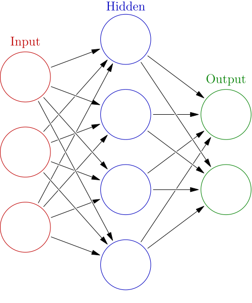
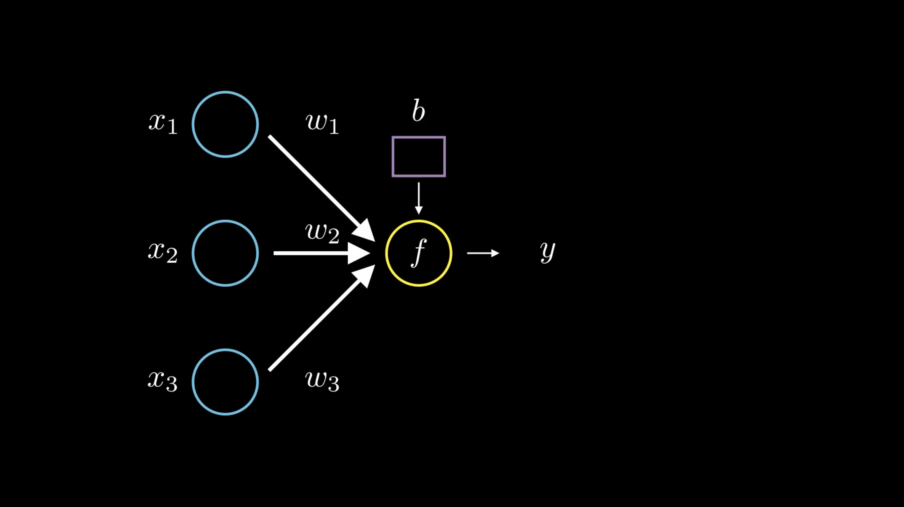
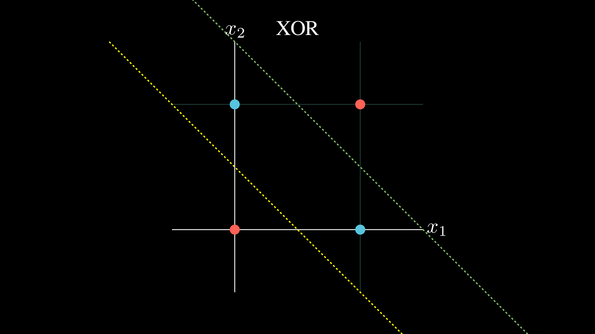

Kolmogorov-Arnold Networks (KANs) : Gaining Interpretability inside Neural Networks
If you’ve ever looked into neural networks at all, you’ll know they’re a bit hard to interpret. They’re often described as black boxes, which is a shame as they are extremely handy.
About a year ago, a paper proposing an alternative to Multi-Layer Perceptrons was published and made quite some noise. It took inspiration from the Kolmogorov–Arnold representation theorem to build a new kind of neural networks: Kolmogorov-Arnold Networks (KANs)
One of the goals of this architecture was to gain interpretability.
Before diving into what they are, how they work, and why they are useful, we first need to understand where it all come from: Neural Networks
Mimicing the brain: Neural Networks
Neural networks, sometimes called artificial neural networks, is a model of computation inspired by the structure and function of biological neural networks found in human and animal brains.
Like any network, they are made up of nodes and edges which can be seen as neurons and synapses connecting those neurons.
Generally, neural networks comprise an input layer, an output layer, and some additional hidden layers between them.
Each neuron receives a signal from connected neurons, processes them, and sends a signal to subsequent connected neurons.
A connection between two neurons $A$ and $B$ has a weight $w$ which can be seen as how important $B$ considers $A$’s output.
Each node also has what is called a bias which can be thought of as a way to shift the activation function’s output independently of the input. In other words, it’s like a threshold that the weighted sum must exceed for the neuron to activate.
Perceptron
The simplest form of neural network is called a perceptron. This is a form of binary classifier, meaning that it takes an input $\bold{x} \in \mathbb{R}^n$ and outputs either $0$ or $1$.
Here, our neural network doesn’t have any hidden layers. It only has input and output layers.
What happens is that the output node (represented in yellow) sums up the value of each node multiplied by its corresponding weight and adds its bias $b$ to it. And then process the results through an activation function $f$ before outputting the result $y$.
This whole process can be represented as $y = f(\bold{w}\cdot\bold{x}+b)$.
Let’s try to understand what this means.
The expression $\bold{w} \cdot \bold{x} + b = 0$ defines a hyperplane in $\mathbb{R}^n$: a flat, $(n-1)$-dimensional surface that separates the space into two halves.
Depending on the input $\bold{x}$, the value of $\bold{w} \cdot \bold{x} + b$ tells us which side of the hyperplane we’re on:
- If it’s positive, we’re on one side,
- If it’s negative, we’re on the other,
- And if it’s exactly zero, we’re on the hyperplane itself.
So what the function $f$ does is that it takes the relation between our input and this hyperplane and outputs a decision with respect to this relation.
In the case of our perceptron, $f$ is generally defined as the Heaviside step function such that anything “above” this hyperplane outputs $1$ and anything “below” it outputs $0$ (in the case where our input is on the hyperplane, it outputs $\frac{1}{2}$).
This is similar to how we make age-based decisions, like checking if someone is old enough to vote or buy alcohol:
- The input to the perceptron is a person’s age.
- The threshold (defined by the bias and weights) is 18 years.
- If the age is less than 18, the perceptron outputs $0$, meaning “not allowed”.
- If the age is 18 or more, it outputs $1$, meaning “allowed”.
The main issue with the perceptron is that it can only solve linearly separable problems.
The example above illustrates this perfectly. Given an input $ (x_1, x_2) \in {(0, 0), (0, 1), (1, 0), (1, 1)}$ you cannot represent the $\text{XOR}$ relation.
This is where the multi-layer perceptron comes into play.
Multi-Layer Perceptron
When you think about it, a non-linearly separable problem can actually be thought of as a combination of multiple linearly separable problems, coupled with some transformations.
Take the classic $\text{XOR}$ problem, for example.
One could draw two lines and say that if you are above the first and below the second the output is $1$ and $0$ otherwise.
Of course, this is easier said than done. So let’s walk through how it might actually be achieved, step-by-step.
- We’ll start by using a hidden layer made of two perceptrons, each responsible for splitting the input space in half. The first perceptron creates the decision boundary shown by the yellow dashed line, and the second handles the one shown by the green dashed line.
- Each output passes through a $\text{ReLU}$ activation function, that outputs $0$ for negative inputs and the input itself if it’s positive. (Here, $x$ can be thought of as how far the point is from the boundary - not an exact distance, but more of a relative magnitude.)
- These two outputs form a new input vector, which we then feed into a final perceptron that combines them to produce the correct XOR output.
Here is what our multi-layer perceptron looks like:
If you were wondering what a multi-layer perceptron is under the hood… well this is it:
-
Each neuron performs its own decision task, drawing a linear boundary in the feature space it sees.
-
Each layer combines multiple of these linear decisions, effectively solving several linearly separable problems at once. The result? A new, transformed feature space.
-
Then, the next layer takes this new space as input and does it all again, layer by layer, bending and reshaping the data until it can line things up just right.
-
As for how the weights and biases are found? That’s a story for another post but very basically, it’s all about adjusting these decision boundaries so they work together, as optimally as possible.
It’s such a simple idea, but so fundamental that when it finally clicked for me… I was genuinely mind-blown.

Not necessarily by how clever the mechanism is (though it is), but more by the fact that I managed to make it through multiple ML classes without ever really grasping this.
You might ask yourself why we need our activation functions to be non-linear and the answer’s pretty simple: Without non-linear activation functions, stacking multiple layers of a neural network is kind of pointless.
If every neuron in every layer just performed a linear transformation (like a weighted sum without any non-linearity), then the entire network (no matter how deep) would still just be equivalent to one big linear function. And linear functions can only draw straight lines, which means we’re back to solving only linearly separable problems.
It’s the activation functions that introduce non-linearity, allowing the network to bend the input space, twist decision boundaries, and capture more complex patterns.
The True Function: A Neural Network’s Goal
Let’s take a step back for a moment. At the core of it all, there’s a function, let’s call it $f$, that describes the phenomenon we’re observing and trying to understand.
The Universal Approximation Theorem is a powerful result. It tells us that a multi-layer perceptron can approximate any function, given enough neurons. This theorem, however, does not provide a way to build such a MLP. It just states that there exists one.
That’s still a big deal, because it means our approach to designing neural networks is theoretically sound. It can, in principle, approximate any function we care about.
Now, back in the 20th century, mathematicians Vladimir Arnold and Andrey Kolmogorov showed that any continuous multivariate function $f$ can be represented as a finite composition of continuous univariate functions and addition.
We’re golden! It gives us another theoretical way to represent our target function $f$. And here’s the cool part: what if we applied the same intuition behind MLPs to this idea? Imagine each node representing one of those univariate functions. Then, just like in an MLP, we could tweak and combine them to approximate $f$.
Well, that’s exactly the idea explored in a recent 2024 paper: KAN: Kolmogorov–Arnold Networks.
Kolmogorov-Arnold-Networks
I still need to get this part done :)